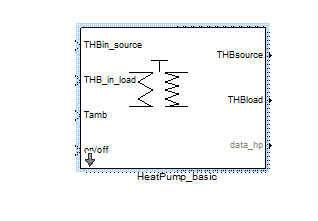
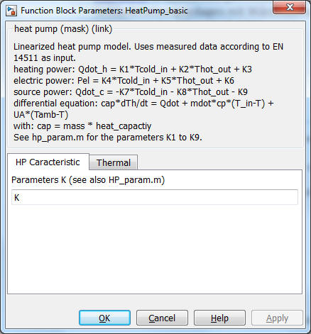
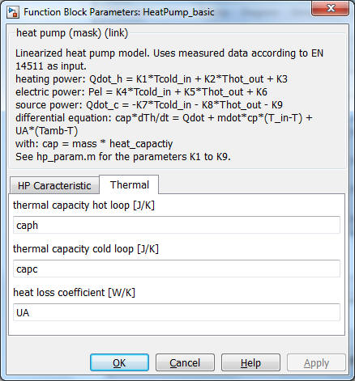

Heat Pump basic

Path: CARNOT/Basic/Thermal_Models
Purpose
Model for the calculation of a fluid to fluid heat pump system.
Description
The dynamic behaviour of the heat pump is calculated using an empirical model (Schwamberger 1991). The basis is the static
characteristics of the heat pump according to the german standard DIN 8900. In
the two-dimensional diagram the heating, source and electric powers are given
for different temperatures in the primary and secondary cycles. The
characteristics are approximated by linear equations:
heating_power
= K1
* Tprimary,in + K2
* Tsecondary,out
+ K3
electric_power
= K4 * Tprimary,in + K5 * Tsecondary,out + K6
source_power =
-K7 * Tprimary,in - K8 * Tsecondary,out - K9
The outlet temperatures of the hot and cold branches are calculated by the differential equations:
caph * dTh/dt = Qdotheating + mdot * cp *
(Tin,h-T) + UA * (Tamb-Th)
capc * dTc/dt = Qdotsource + mdot * cp * (Tin,c-T)
+ UA * (Tamb-Tc)
with:
cap = mass * heat_capactiy
Inputs:
Outputs:
NOTE: The mass flows
must be given by external pumps.
Additional files: The parameters K1..K9
can be determined by the M-file hp_param which is automatically called by the heat pump block. The
linear characteristics of the model need the powers only at lowest and highest
temperature. Other values will be interpolated.
Parameters and Dialog Box


where vectors and matrix come
from this kind of tables:
|
|
outlet load temperatures |
|
transpose(inlet source temperatures) |
heating/source/electric power |
Characteristics
Direct Feedthrough Yes
Sample
time
Inherited
from driving block
Vectorized
No